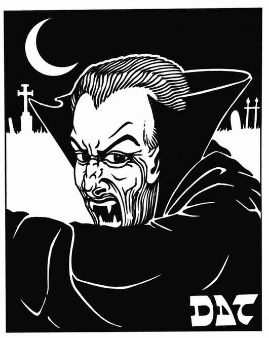
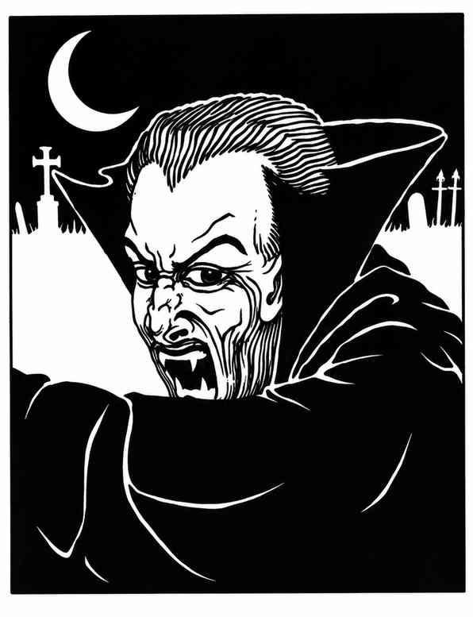

吸血鬼 · Vampire

 |
|
吸血鬼是最令人畏惧的混乱邪恶不死生物，夜间出没。阳光时必须在棺材或类似容器中休息，除非深埋地下；即使在地下也必须偶尔回到棺材，借助墓土恢复力量。像所有不死生物一样，吸血鬼同时存在于物质位面和负能量位面，并拥有 18/76 的力量。
吸血鬼命中造成 5–10 点伤害，并凭负能量吸取目标 2 个生命能级，连同生命骰、能力等级、攻击等级等一并损失。只有魔法武器能伤害吸血鬼；每轮再生 3 点生命值。战斗中降至 0 点时不会死亡，而会变为气体形态，必须在 12 轮内返回棺材，休息 8 小时后恢复实体。
吸血鬼不受睡眠、魅惑、定身、毒素或麻痹影响；寒冷或闪电法术只造成一半伤害。它能随意变为气体形态，也能随意变成巨型蝙蝠。凝视目标眼睛时，魅惑效果使目标魔法豁免 −2。它还能召唤生物援助：地下通常召唤 10–100 只鼠或蝙蝠（蝙蝠只干扰、遮挡视线，不进行物理攻击），荒野通常召唤 3–18 匹狼；召唤物在 2–12 个战斗轮内到达。
若有人大胆举起大蒜、镜面、十字架或其他守序善良圣徽，吸血鬼会退缩。这些物品不会伤害或驱逐吸血鬼，但大蒜使其犹豫 1–4 轮；镜子或圣徽会迫使它调整位置，使物品不在自己与目标之间，或命令召唤物移除物品。守序善良圣徽（如十字架）对所有吸血鬼都有绝对效力，不论其生前信仰。
杀死吸血鬼的方法包括：暴露在直射阳光下，1 轮内死亡并立即失去力量；在流动水中浸泡 3 个战斗轮，每轮失去三分之一生命值后死亡；将木桩钉入心脏（木桩保持时才有效），随后还必须砍下头并用圣饼填满嘴。每瓶泼中的圣水造成 2–7 点伤害。被吸干生命能量的人类或类人生物会在埋葬 1 天后变成受杀死者控制、力量相应的吸血鬼；若创造它的吸血鬼先死，新生吸血鬼将获得自由意志。东方吸血鬼天生隐形，无法魅惑，也不能随意变为气体形态。